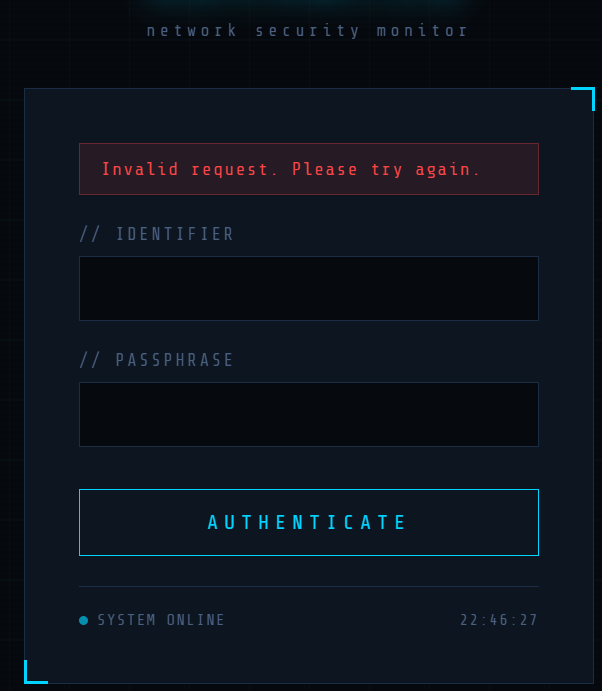
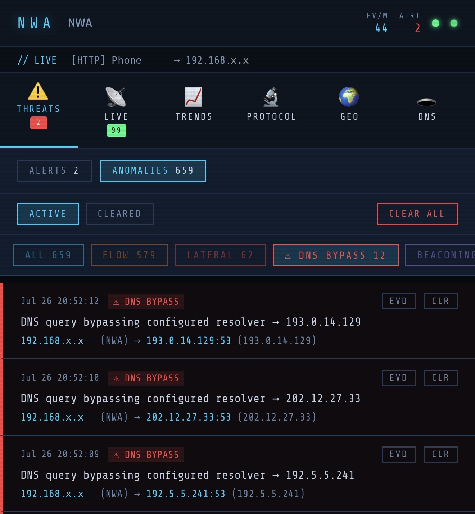
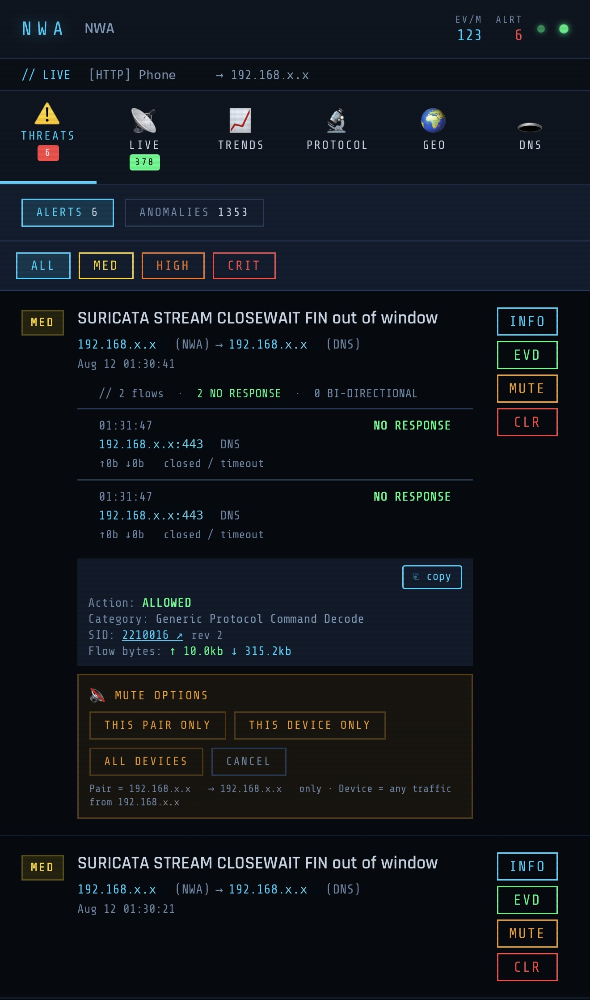
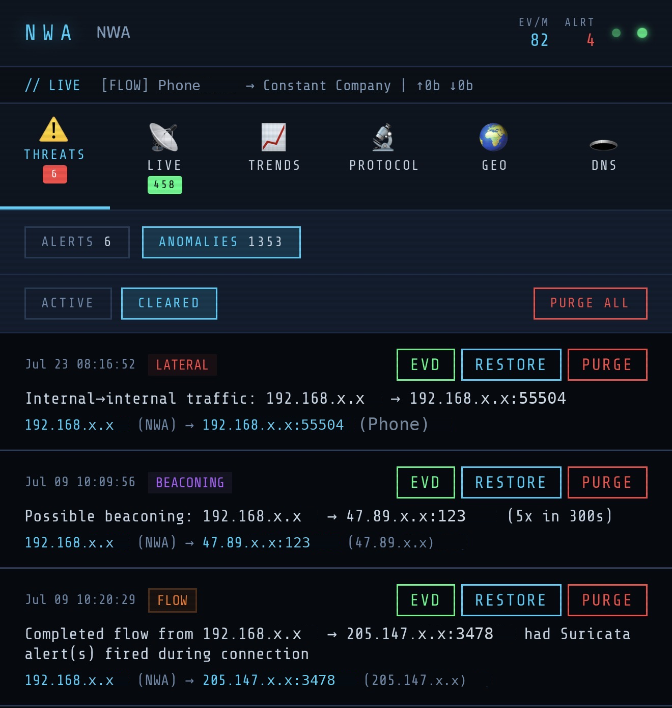
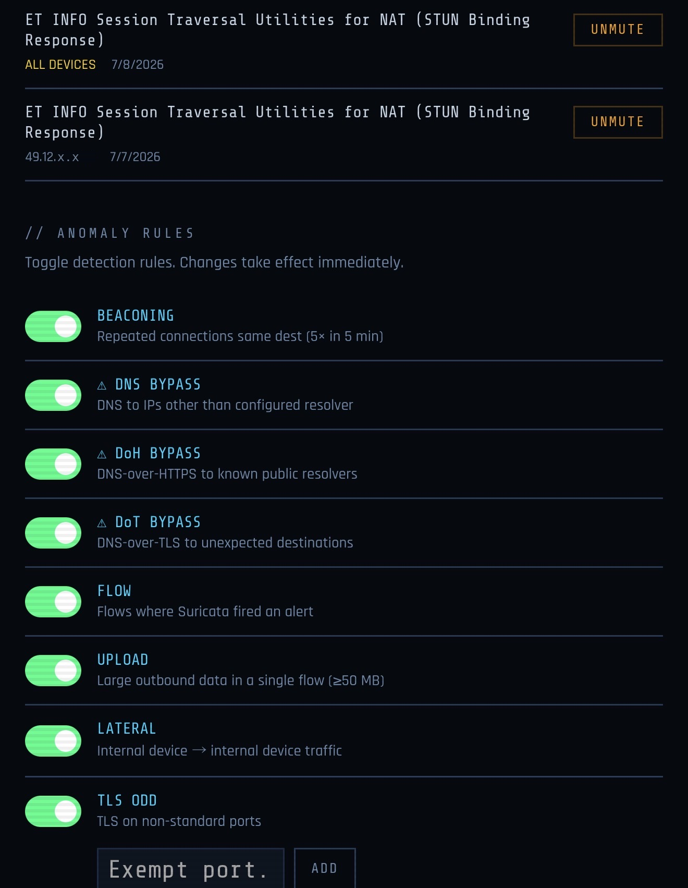
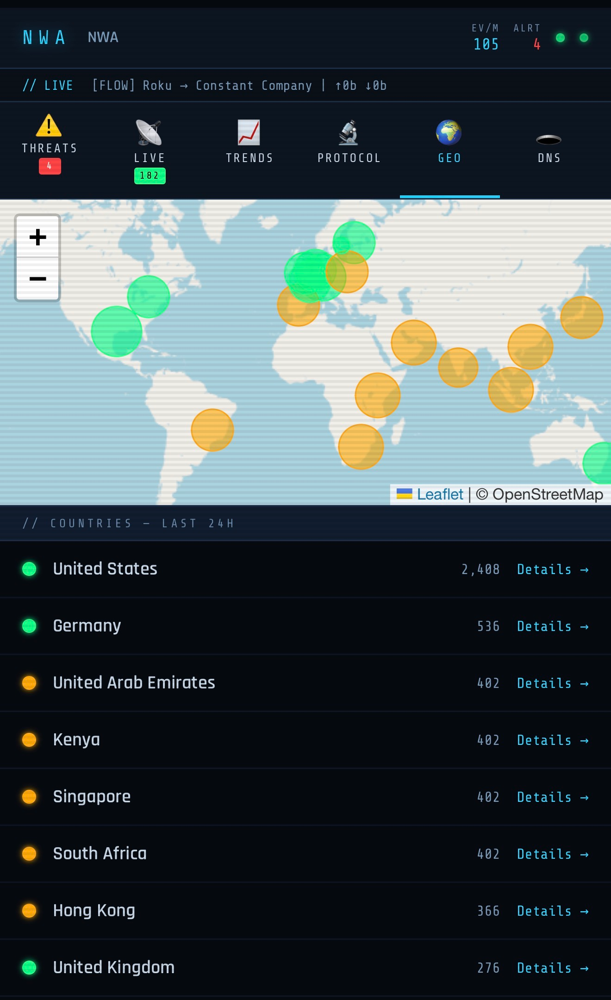
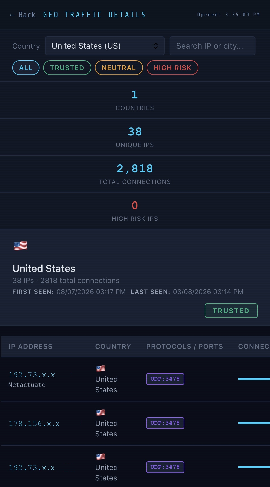
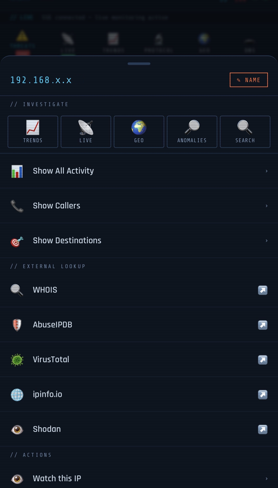
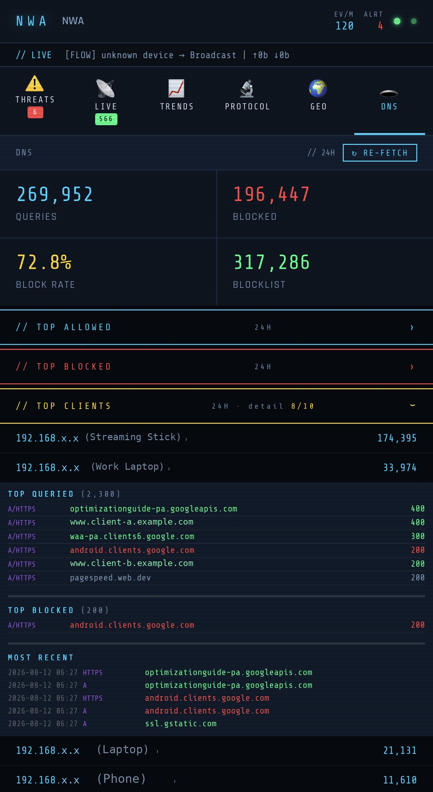
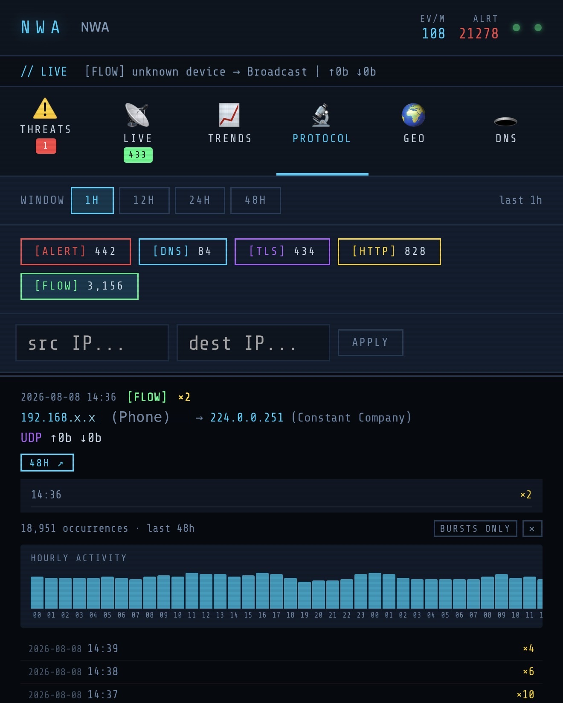

Version 3.0August 2026 Private deployment, custom-built network security monitoring infrastructure.
🔒 DEMO MODE: Domains, device names, and detection thresholds have been sanitized for
portfolio use, however these data patterns and metrics are authentic and representative of
real-world network activity. The production deployment runs continuously on hardware I own,
behind a VPN perimeter, with no external infrastructure in the path.
Overview
This is the application layer that sits on top of my Suricata IDS pipeline, with the earlier build generating
static HTML from bash every three minutes, which worked well as a reporting surface but could never do
anything beyond render script outputs. This version is a full Flask application
served over TLS, with a live event stream, a detection engine that fires notifications on its own to complement Suricata's known-bad signature rules,
and a mobile Progressive Web App that installs to the home screen on iPhone.
The bash aggregators were deliberately kept and they still run on cron to produce the hourly, daily,
and weekly JSON files that the platform reads, because they are faster at bulk log parsing than Python and
because a failed aggregator run stays isolated from the web application instead of taking it down. The
split is intentional as heavy log processing stays in bash on a schedule, while real-time event handling lives in
Flask daemon threads, and neither one can break the other.
What that buys is the difference between reading a report and running an investigation because every IP is a
pivot point, alerts can be muted at three different scopes without touching what Suricata records (mute for this device, mute this pair: src & dst, and mute for all devices), policy
violations persist until someone actually clears them, and the whole thing keeps working in a degraded but
honest state whenever the connection to the sensor drops. This gives insight into what exactly happened leading up to a network blackout, which is imperative to investigation, particularly in the event of DOS/DDOS.
The data collection pipeline, geolocation database, and aggregation scripts are documented separately in the
Suricata IDS dashboard project. This page covers the PWA that was built on top of it, for improved UX/UI and additional features.
From Initial Static Build to Application
Capability
Static Build (v1)
Application (v3)
Delivery
HTML regenerated by cron every three minutes
Flask behind Nginx, rendered on request
Event latency
Up to three minutes stale by design
Live event stream pushed over SSE as Suricata writes
Access control
None, static files served directly
Session authentication enforced on every route
Detection
Display of what Suricata already flagged
Eleven rules across two independent engines
Notifications
None, required opening the page
Push notifications to phone, with per-rule cooldowns
Configuration
Editing scripts over SSH
In-app settings, hot-reloaded without a restart
Mobile
Desktop layout, scaled down
Installable PWA with a purpose-built nine-tab interface
Investigation
Read the page, then go read logs
Pivot between panels on any IP without losing your place
Connection loss
Last generated page, silently stale
Cached snapshots with the staleness stated on screen
Authenticated Application

Click to enlarge
Trading Zero Input Surface for Real Capability
The static build had a genuine security advantage to this PWA that is simply due to the lack of interactivity: operating with no user input and nothing
but flat files, the injection surface was literally zero. Turning it into an application gave that up on purpose,
which meant every input path had to be treated as hostile pre-emptively, rather than hardened later. Patching a security vulnerability is better than nothing, but avoiding
exploitation in the first place is the goal.
Device names, IP addresses, search queries, protocol filters, cursor offsets, and record identifiers are
each validated against an explicit pattern or allowlist before they reach a file operation. Post-login
redirects resolve against a fixed whitelist rather than a prefix check, because an open redirect is a real
phishing vector and a starts-with test is not a defense.
Authentication required on every route and every API endpoint, with no unauthenticated read paths
CSRF protection on state-changing requests, hashed credential storage, no secrets in logs
Login attempt rate limiting with temporary lockout after repeated failures
Secure, HttpOnly, SameSite session cookies with configurable idle timeout, set independently for desktop and mobile
DNS Bypass Detection

Click to enlarge
Catching Devices That Attempt to Route Around Filtering
I utilize a custom DNS stack and this dashboard surfaced areas of improvement to harden my network via ACL's and static routing, by identifying devices attempting to bypass my local
recursive server. Smart TVs, streaming sticks, and voice assistants routinely ship with
hardcoded public resolvers or encrypted DNS enabled by default, which quietly bypasses every blocklist on
the network. The platform watches for that behavior directly rather than assuming compliance, because filtering DNS at the resolver only works if devices actually use it, and plenty of consumer hardware is
built to avoid exactly that..
Detection covers plaintext queries sent to anything other than the approved resolver, encrypted DNS over
TLS on its dedicated port, and DNS over HTTPS aimed at a maintained list of known resolver addresses. Each
finding is deduplicated on a rolling window so a chattering IoT device does not bury the panel, and each
one persists until it is manually cleared rather than aging out on its own.
Evidence expansion on every finding, pulling matching flow records straight from the event log
Flows labeled as no response or bidirectional, which separates a blocked attempt from a successful one
Rule-aware evidence scope: a device-wide view for plaintext bypass, a targeted pair view for flagged flows
Additional policy rules for oversized uploads, TLS on unexpected ports, internal lateral movement, and periodic beaconing
Real-Time Alert & Event Pipeline

Click to enlarge
Four Threads, One Tail of the Event Log
A single background thread tails Suricata's event stream and feeds everything downstream from one shared
buffer, so the log is read once no matter how many consumers exist. The notification engine, the policy
violation engine, and the snapshot writer all consume from that buffer by position rather than reopening
the file, and the browser receives the same events over a persistent server-sent event stream.
Alert muting was the feature that needed the most care. Silencing a noisy signature is necessary, but doing
it carelessly means hiding a real detection later, so muting operates at three explicit scopes and never
touches what gets recorded. Suricata's log and the persistent alert store always contain everything, with
muting acting purely as a display and notification filter.
Mute scopes: a specific source and destination pair, a single device, or network-wide
Network-wide muting requires confirmation against an explicit warning, with no default selection
Live feed supports a per-IP overlay with a rolling sixty-second rate indicator that decays visibly when traffic stops
Three separate event stores kept deliberately distinct: session notifications, persistent alerts, and policy violations
Going Beyond Known-Bad Signature Alerting

Click to enlarge
Custom Anomalies Rules & Features
Policy violations are held to a different standard than alerts. An alert is a notification but a violation is a finding,
and in other platforms these findings can be removed as time passes or more violations are captured but nothing expires on a timer here.
Entries persist until someone looks at them and decides they are handled, which means an empty panel is a statement that the network is clean, rather than a
statement that enough time has passed.
Every finding carries its own evidence and clicking the EVD button pulls the underlying flow records straight from the
event log and labels each as no response or bidirectional, which is the difference between a device that
tried to bypass the resolver and a device that succeeded. The scope of that lookup follows the rule that
fired, so a plaintext bypass returns everything that device attempted while a flagged flow returns only
the pair involved.
Clearing a finding moves it to a separate cleared log rather than deleting it, keeping an auditable record of what was dismissed and when
Restore moves an entry back to active, so dismissing something during triage is a reversible decision rather than a permanent one
Purge is the only destructive action, applies solely to the cleared log, and is deliberately separated from clearing so the reversible and irreversible paths are never one click apart and requires a User to Clear an Anomaly and then Purge it
Anomaly Rules that are applied are set via toggles in the Settings menu; discussed below
Runtime Configuration

Click to enlarge
Tuning Without SSH
Detection rules need adjustment as a network changes, and requiring a terminal session for every tweak
guarantees the tuning simply never happens. Rule state, exempt ports, watched addresses, and session
timeouts are all editable in the interface, written atomically, and picked up by the running engines on
their next poll cycle without a service restart.
The watchlist is the piece I use most. Right-clicking any address anywhere in the dashboard adds it to the
watched list, which the notification engine merges with its static rules at evaluation time, so promoting
something from interesting to alerting takes one click during an investigation rather than a config edit
afterward.
Watchlist additions available from any panel through the shared IP context menu
Exempt port management with range validation on every entry
Independent idle timeout values for desktop and mobile sessions
Per-rule enable and disable toggles, applied within the engine's next polling interval
Toggles for: Beaconing, DNS/DoH/DoT Bypass, Flows where Suricata triggered an alert, any single outbound data transfer that is over 50MB in one flow, suspicious Lateral Movement, and TLS occurring over odd ports (with the ability to exempt specific ports for legitimate use)
Offline Forensic Mode
Staying Useful After the Connection Drops
A monitoring tool that shows nothing during an outage is least useful exactly when it matters most. Browser
caching does not solve this, because it only captures what a tab happened to load before the disruption, and
the tab is usually closed. The platform instead writes a full set of state snapshots to disk on a fixed
interval, entirely independent of whether anyone has the dashboard open.
When the browser loses the event stream, the interface shifts to an amber state, states the exact age of the
most recent snapshot in the banner, and marks every panel title as cached so there is no chance of mistaking
old data for current data. Once the connection returns, live data reloads automatically. The practical
payoff is post-incident: after an outage clears, the state from immediately before the disconnect is still
sitting there waiting to be read.
Snapshot writer runs as an independent daemon thread on a fixed cycle, unaffected by client activity
All writes are atomic, with a storage mount guard that refuses to write rather than writing to the wrong filesystem
Recovery is automatic on both desktop and mobile, with no manual refresh required
Offline state is communicated explicitly, because silently serving stale data is worse than showing none
Carried Forward and Rebuilt
These panels existed in the static build and were rebuilt as application features. The screenshots below show
what changed once the data stopped being frozen at generation time.

Geographic Traffic
Opens as an in-app overlay instead of a separate page, so investigation context survives
Geolocation resolved locally against an offline database, with no outbound API calls

Country Drill-Down
Per-address protocol, port, and connection detail with first and last seen timestamps
Behind the same authentication as every other route, closing a gap left by the static version

IP Investigation
Pivot strip jumps the selected address into trends, live feed, geo, anomalies, or search
Target panel highlights and scrolls to the row, and clears the filter automatically on exit
'Show All Activity' displays all inbound and outbound traffic via Suricata as well as DNS queries, for ease of investigation
DNS Summary
Live API calls rather than values baked in at generation time
API credential read at runtime from a permission-restricted file, never present in source or hardcoded
Top clients and queried domains sit alongside IDS traffic in one view
General Status and then accordions for each category for ease of navigation on mobile; Top Allowed, Top Blocked, Top Clients, Query Types, and Query Stats

DNS Query Detail
Per-client query history with record types, allow and block status, and timestamps
Queries that are served via cache are always rendered in green, queries that required local recursion are gray, and queries that are blocked are red
Coverage ratio shown at all times, so partial data is never mistaken for complete data

Per-Protocol Browser
Reads live from the event log with cursor-based paging rather than a pre-aggregated snapshot
Source and destination filtering applied server-side across DNS, TLS, HTTP, flow, and alert events
Engineering Notes
Labeling missing data instead of hiding it
The DNS panel reported no query history for several clients while the resolver's own counter showed over a
hundred thousand queries from one of them in the same window. The honest fix came before the real fix: the
interface now states the resolver's count alongside what was actually retrieved, and displays a coverage ratio
on every load rather than only when incomplete. Showing the indicator only on failure turned out to be
ambiguous, because silence read as a broken widget rather than a clean result.
Finding the actual root cause instead of the plausible one
That coverage gap traced back to five smart plugs generating roughly 855,000 queries in a day and consuming
nearly the entire retrieval window. The plugs were not misbehaving. A public time server was returning its
records with a zero cache lifetime, an explicit instruction never to cache, which meant every single request
went out fresh. A local cache override fixed it at the resolver and dropped the top talker by an order of
magnitude, with no application code changed at all.
Two other approaches were tested and discarded on measurement rather than intuition. Per-client retrieval was
correct but took forty-plus seconds per device and could not scale. A row-count threshold for deciding which
clients needed deeper retrieval would have been wrong on every single client, because the clients returning
fifty rows were covering a full day while the clients returning two hundred were covering twelve minutes. Only
the timestamp span revealed that, and shipping the row-count version would have marked the busiest devices
complete while holding two percent of the intended window.
Infrastructure and Security
Progressive Web App by choice, not by limitation: a security tool displaying home network
topology, device inventory, and alert history has no business routing through app store infrastructure or a
third-party review process. Running as a PWA keeps the entire stack on hardware I own, served over TLS I
control, reachable only through my own tunnel, with zero external dependencies in the path.
Layered deployment: the application never terminates TLS itself. Nginx handles TLS and
reverse proxying, the application server binds to localhost only, and systemd manages the service lifecycle
with hardening directives applied at the unit level.
Local PKI: certificates issued from a private certificate authority, TLS 1.2 and 1.3 only,
with HSTS and Content Security Policy headers enforced at the proxy.
Credential handling: the Pi-hole API credential never appears in the codebase. The
installer writes it at deploy time to a dedicated file owned by the account that runs the collection
scripts, with permissions set so no other user on the system can read it, and the application layer reads
its own copy from a generated configuration file under the same restriction. Credentials are unique per
deployment and authenticate only to a resolver API on the local subnet, so the value of a compromised one
does not extend beyond the device holding it. That protection is exactly as strong as the account boundary
it rests on, and it offers nothing at all once the hardware is out of your hands. Moving these secrets to
encrypted storage through systemd credentials is the tracked next step.
Explicit filesystem boundary: the application owns a defined set of paths and treats
everything belonging to the IDS, the aggregators, and the existing web root as read-only or entirely
off-limits. That boundary is enforced in the installer as well, which will not modify an existing virtual
host, an existing crontab, or any file outside its own tree.
Defensive installation: the installer ships a preflight mode that validates prerequisites,
dependencies, ports, storage, and certificate state without writing anything, and exits with a distinct code
for ready, blocked, and proceed-with-warnings.
Atomic writes throughout: every file the application produces is written to a temporary path
and moved into place in a single operation, so an interrupted write can never leave a truncated file behind.
Storage discipline: all logs and persistent state are written to external storage rather
than the SD card, with the mount verified before each write cycle.
Version History:
v1.0 (March 2026): Static dashboard generated from bash, published as a separate project
v3.0 (August 2026): Rebuilt as an authenticated Flask application with a mobile PWA, live event streaming, and independent detection engines